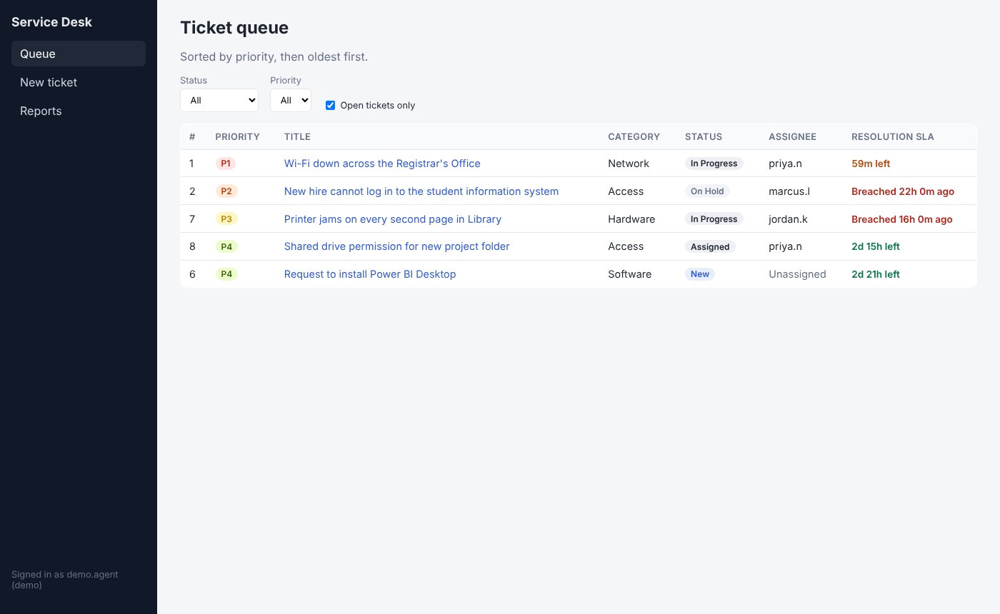

Service Desk Ticketing System

An IT service desk modelled on how internal support teams handle incidents.
- Priority from impact × urgency (P1–P4), following the ITIL matrix approach
- Response and resolution SLA deadlines with breach detection and a live countdown
- Ticket workflow enforced on the server; every change kept in an audit trail
- SQL reporting: SLA compliance, breaches, average resolution time, volumes
- 39 automated tests, GitHub Actions CI, Docker image deployed on Render